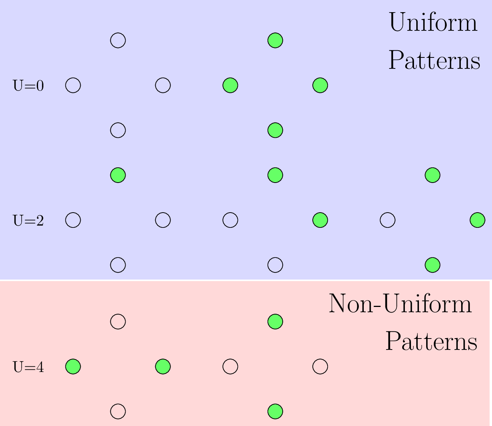

\documentclass[varwidth]{standalone}
\usepackage{tikz}
\usepackage{xcolor}
\usetikzlibrary{positioning}
\usetikzlibrary{backgrounds}
\tikzset{
% styling for filled node
filled/.style={circle,draw,fill=green!60, minimum size=5},
% styling for white nodes
empty/.style={circle,draw, minimum size=5},
% diagram with P = 4
pics/pattern/.style args={#1/#2/#3/#4/#5}{
code={
\node[#1] at (0, 1) (#5-1) {};
\node[#2] at (1, 0) (#5-2) {};
\node[#3] at (0, -1) (#5-3) {};
\node[#4] at (-1, 0) (#5-4) {};
}},
pics/pattern/.default=empty/empty/empty/empty/a
}
\begin{document}
\begin{tikzpicture}[background rectangle/.style={fill=blue!15}, show background rectangle]
% Uniform LBP, and draw box
% U = 0 Row
\node[] at (-2,0) {U=0};
\path (0,0) pic[scale=1.0] {pattern};
\path (+3.5,0) pic[scale=1.0] {pattern=filled/filled/filled/filled/a};
% U = 2 Row
\node[] at (-2,-3) {U=2};
\path (0,-3) pic[scale=1.0] {pattern=filled/empty/empty/empty/b};
\path (+3.5,-3) pic[scale=1.0] {pattern=filled/filled/empty/empty/c};
\path (+7.0,-3) pic[scale=1.0] {pattern=filled/filled/filled/empty/d};
\node[text width= 2cm] at (7.0, 1) {\LARGE{Uniform \hfill \break Patterns}};
\end{tikzpicture}
%
\begin{tikzpicture}[background rectangle/.style={fill=red!15}, show background rectangle]
% Uniform LBP, and draw box
% U = 4 Row. i think
\node[] at (-2,0) {U=4};
\path (0,0) pic[scale=1.0] {pattern=empty/filled/empty/filled/e};
\path (+3.5,0) pic[scale=1.0] {pattern=filled/empty/filled/empty/f};
\node[text width= 4cm, align=right] at (6, 1) {\hfill \LARGE{Non-Uniform} \break \hfill \break \LARGE{Patterns}};
\end{tikzpicture}
\end{document}Created by David Li